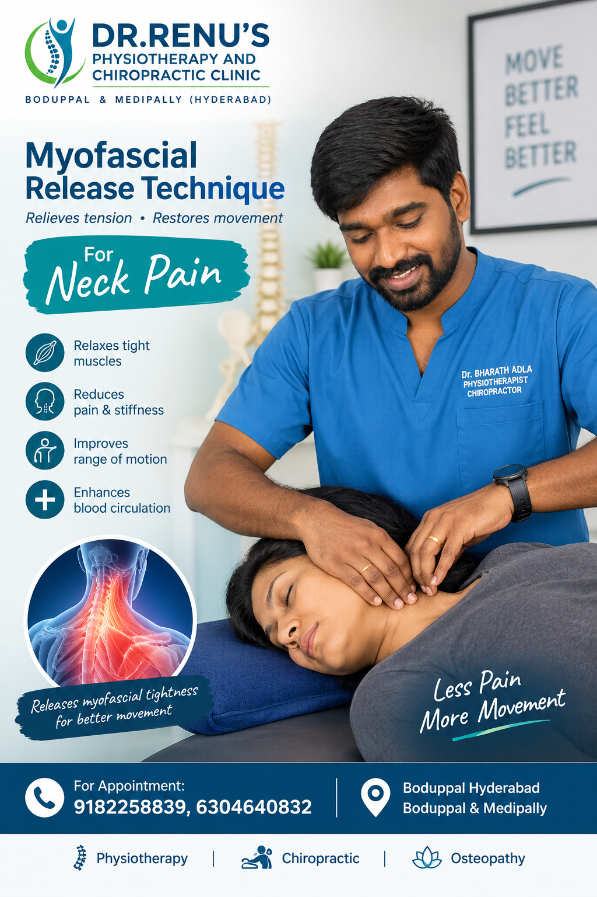
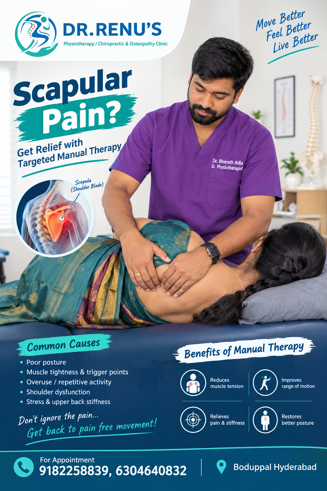
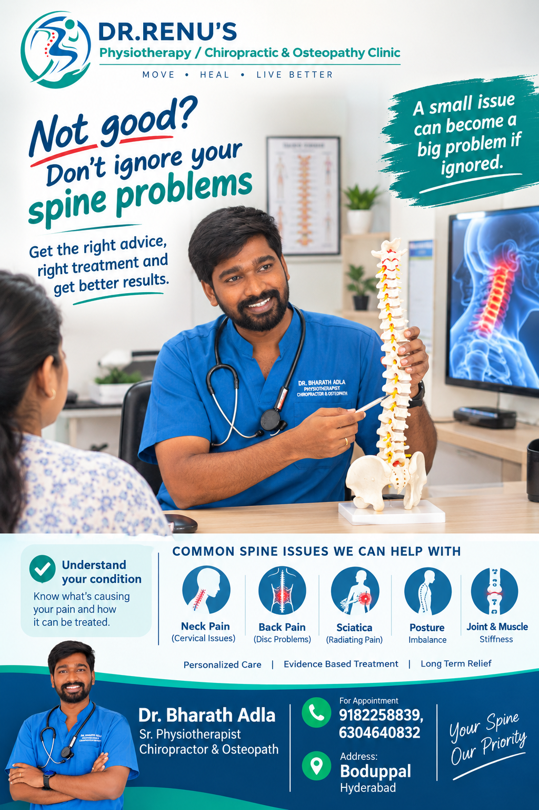

Spine Health
October 2026
5 min read
Common Causes of Lower Back Pain & Non-Surgical Solutions
Lower back pain affects over 80% of adults at some point.
Prolonged slouching at office desks puts enormous compressive
pressure on the L4-L5 lumbar discs. Learn how manual spinal
adjustment and decompression provide lasting relief without
surgery.
Clinical Takeaways:
-
Avoid sitting for >45 minutes continuously without
standing.
-
Gentle spinal decompression restores disc hydration.
-
Core stabilization exercises protect against relapse.

Chiropractic
September 2026
4 min read
What to Expect During Your First Chiropractic Adjustment
Nervous about your first visit? Demystify the "popping" sound
(cavitation of nitrogen gas bubbles in the synovial fluid),
how palpation identifies restricted segments, and the gentle
sensations of relief immediately following an adjustment.
Clinical Takeaways:
-
Spinal adjustments are safe, calibrated, and painless.
- The popping sound is simply harmless gas release.
-
Increases range of motion immediately after treatment.
August 2026
6 min read
Tech Neck & Cervical Pain: Ergonomic Guide for IT
Professionals
Tilting your head forward 45 degrees to stare at screens
increases cervical weight loads from 5kg to an astonishing
22kg. Discover 4 daily stretches, monitor height ergonomics,
and cervical realignment therapies to reverse text neck.
Clinical Takeaways:
-
Position screen top at eye-level to maintain neutral
spine.
-
Perform chin tucks every 2 hours to strengthen deep
flexors.
-
Chiropractic adjustments relieve trapped suboccipital
nerves.
July 2026
5 min read
Sciatica: Understanding the Nerve, the Symptoms, and the Cure
Why does nerve pain in your foot originate from your lower
lumbar spine? Explore how herniated nucleus pulposus presses
on the sciatic nerve root and why targeted mechanical
decompression works when pills fail.
Clinical Takeaways:
-
Radiating electrical numbness is a sign of nerve
entrapment.
-
Avoid heavy forward bending during active sciatica
flare-ups.
-
Lumbar mobilization creates negative pressure to retract
disc bulge.
June 2026
5 min read
The Fascial Distortion Model (FDM): A Global Breakthrough in
Pain Relief
How Dr. Stephen Typaldos revolutionized orthopedics by
demonstrating that patients instinctively point to their
anatomical fascial distortion. Learn how FDM releases folded
fascial bands to deliver immediate athletic recovery.
Clinical Takeaways:
-
Treats 6 distinct anatomical distortions in connective
tissues.
-
Accelerates rehabilitation for acute ankle sprains and
torn tissues.
-
Available exclusively through trained practitioners like
Dr. Bharath.
May 2026
6 min read
Stroke Rehabilitation: Retraining the Brain Through Physical
Therapy
Neuroplasticity allows the undamaged areas of the human brain
to take over lost functions after an ischemic stroke. Dr. Roja
Eepuri shares essential insights into early motor
mobilization, gait retraining, and overcoming spasticity.
Clinical Takeaways:
-
Early intervention within the first 6 months is pivotal.
-
Repetitive functional task practice rewires neural
pathways.
-
Family involvement and emotional encouragement boost
outcomes.

Joint Health
April 2026
4 min read
Preventing Knee Osteoarthritis: Exercises to Protect Your
Cartilage
Cartilage doesn't have direct blood flow; it relies on joint
movement to absorb nutrients. Discover why strengthening the
vastus medialis obliquus (VMO) and quadriceps relieves 40% of
knee joint impact during walking.
Clinical Takeaways:
-
Straight-leg raises and stationary cycling nourish
cartilage.
-
Weight reduction drastically lowers mechanical joint
stress.
-
Gentle joint mobilization reduces painful synovial
inflammation.
March 2026
5 min read
Early Signs of Developmental Delays in Infants & How
Therapy Helps
Is your child slow to roll over, sit independently, or crawl?
Recognizing muscular hypotonia, torticollis, or asymmetric
reflexes early allows compassionate pediatric physiotherapy to
unlock healthy milestone progression.
Clinical Takeaways:
-
Check for neck tilt, flat spots, or stiffness in infant
limbs.
-
Play-based motor facilitation strengthens infant trunk
muscles.
-
Dr. Roja's caring approach keeps young patients
comfortable.
February 2026
4 min read
Frozen Shoulder: The Three Stages and How Gentle Mobilization
Heals It
From the painful freezing stage to the rigid frozen stage and
the gradual thawing stage, adhesive capsulitis can last years
if neglected. Learn how osteopathic glenohumeral mobilization
breaks down capsular fibrosis safely.
Clinical Takeaways:
-
Forcing painful motion accelerates capsular inflammation.
-
Gentle oscillatory joint gliding restores elevation
without trauma.
- Home pendulum exercises maintain daily progress.
January 2026
4 min read
Posture & Breathing: Why Your Slouch is Stealing Your
Oxygen
A slouched thoracic spine compresses the diaphragm by up to
30%, triggering shallow chest breathing, fatigue, neck
tension, and elevated stress cortisol. Learn how thoracic
spine mobility instantly expands lung vital capacity.
Clinical Takeaways:
-
Thoracic extension stretches expand chest cavity depth.
-
Diaphragmatic belly breathing relaxes sympathetic tension.
-
Chiropractic rib-head adjustments resolve deep breath
stiffness.
Sports Medicine
December 2025
5 min read
Sports Hernia vs Muscle Strain: Proper Diagnosis for Athletes
Athletic pubalgia is frequently misdiagnosed as an adductor
groin strain, causing athletes months of frustrated rest with
immediate recurrence upon sprint training. How clinical
biomechanical evaluation pinpoints pelvic shearing forces.
Clinical Takeaways:
-
Differentiates core fascial tears from simple adductor
pulls.
-
Pelvic torsion correction equalizes bilateral groin
forces.
-
Eccentric adductor strengthening builds re-injury
resistance.
Prevention
November 2025
4 min read
5 Daily Stretches Every Desk Worker Must Do to Prevent Disc
Bulges
A complete 5-minute routine requiring zero equipment: Seated
Figure 4 Stretch for piriformis tension, Doorway Pec Stretch,
Standing Lumbar Extension, Thoracic Spine Rotations, and Calf
Eccentric drops.
Clinical Takeaways:
-
Releases tight hip flexors (psoas) that pull on the lumbar
spine.
-
Prevents posterior disc migration during extended sitting.
-
Takes only 5 minutes daily between virtual work meetings.